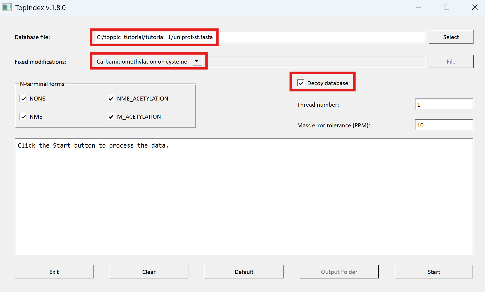
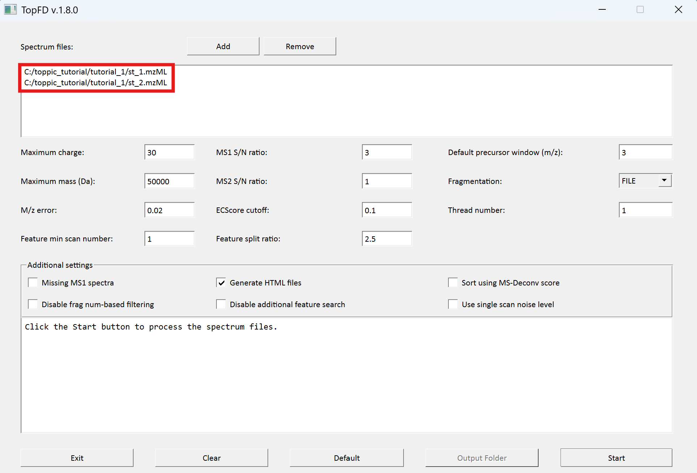
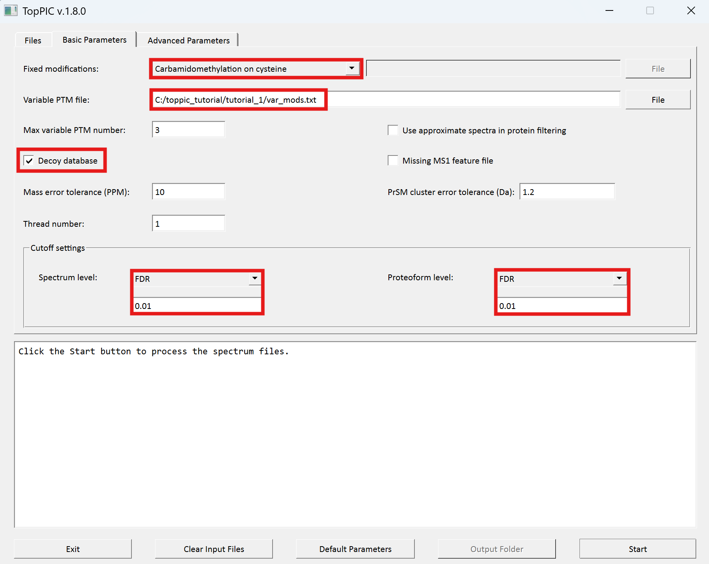
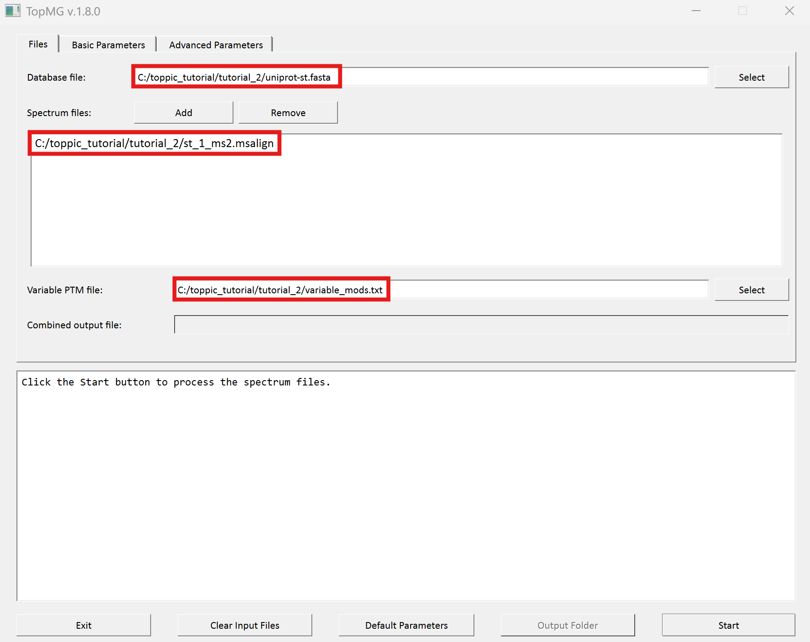
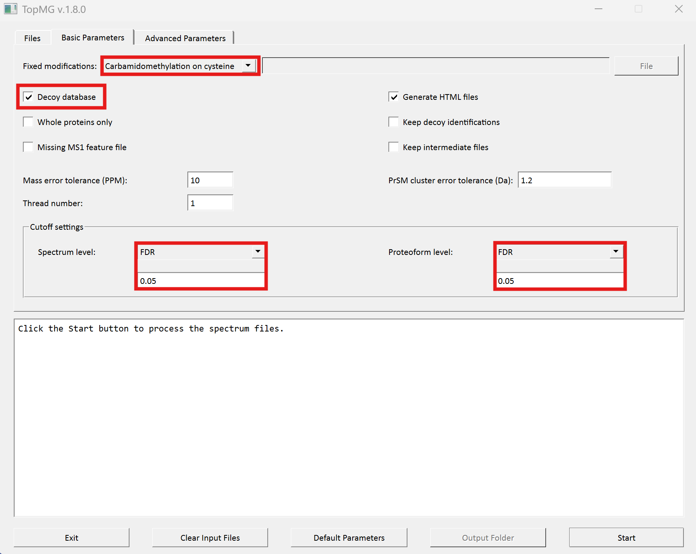
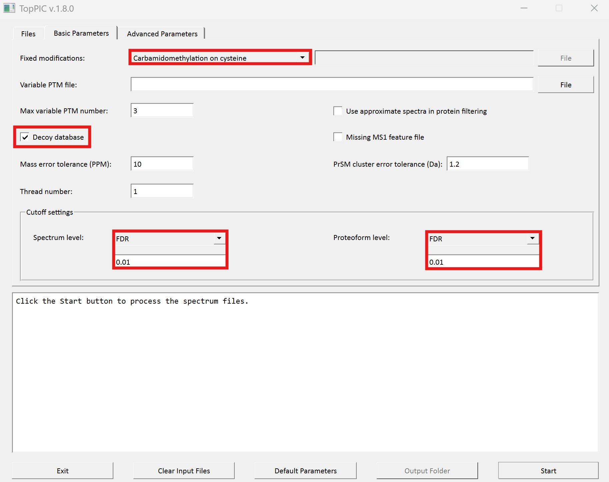

TopPIC Suite
In addition to this tutorial, you can find video tutorials on TopPIC Suite (link) and the interpretation of TopPIC and TopMG identifications (link). We thank Dr. David Tabb for making these video tutorials.
1 Overview
In this tutorial, we use TopPIC Suite to analyze two top-down LC-MS/MS data files on a computer with a Windows Operating System. Annotated proteoform spectrum matches (PrSMs) identified by TopPIC from the data files can be browsed here.
2 Folders
Create the folders below for software packages and data sets used in this tutorial.
- Create a new folder named
toppic_tutorialon theC:drive of your system. - Create a new subfolder named
toppicin the folderC:\toppic_tutorial\for the software TopPIC suite. - Create a new subfolder named
tutorial_1in the folderC:\toppic_tutorial\. - Create a new subfolder named
tutorial_2in the folderC:\toppic_tutorial\. - Create a new subfolder named
tutorial_3in the folderC:\toppic_tutorial\. - Create a new subfolder named
tutorial_4in the folderC:\toppic_tutorial\.
The resulting folder structure is shown in the screenshot below.

3 Software tools
3.1 Msconvert
Msconvert is a software tool in ProteoWizard that converts raw files into various spectrum file formats. Follow the steps below to download ProteoWizard:
- Go to the link ProteoWizard.
- Choose the type 'Windows 64-bit installer' for end users and download ProteoWizard.
- Double click the downloaded file pwiz-setup-3.0-x86-64.msi to install it.
3.2 TopPIC suite
- Go to the download webpage of TopPIC suite.
- Choose the download type "Windows 64-bit zip file", fill out the registration form, and click "I accept license agreement and download TopPIC Suite" to download it.
- Save it to the folder
C:\toppic_tutorial\toppic\. - Extract all the files of the downloaded zip file to the folder
C:\toppic_tutorial\toppic\.
4 Tutorial 1
In this tutorial, we will use TopIndex, TopFD and TopPIC to analyze a top-down MS/MS data set of Salmonella typhimurium for proteoform identification.4.1 Top-down MS/MS Dataset
In the MS experiment, the protein extract of S. typhimurium was reduced with dithiothreitol and alkylated with iodoacetamide. The protein mixture was first separated by gas-phase fractionation, resulting in 7 fractions. Each fraction was separated by an HPLC system coupled with an LTQ-Orbitrap mass spectrometer (Thermo Fisher Scientific). MS and MS/MS spectra were collected at a resolution of 60,000 and 30,000, respectively. In this tutorial, we use only the data files of two fractions (st_1.raw and st_2.raw).
Click here
to download the data set, save it in the folder C:\toppic_tutorial\tutorial_1\, and unzip it in
the same folder.
4.2 Protein sequence database
A S. typhimurium proteome database of 4,533 proteins was downloaded from the UniProt database.
Click here
to download the protein database and save it in the folder
C:\toppic_tutorial\tutorial_1\.
The folder C:\toppic_tutorial\tutorial_1\ is shown in the screenshot below.

4.2.1 Index file generation
We use TopIndex to generate index files from the protein database. They will speed up database search of TopPIC and TopMG. This step is optional. Skipping index generation only slows the analysis of section 4.5 for database search. While TopIndex supports multithreading, users with a spinning hard disk would experience faster speed when using only one thread instead of multple threads. TopIndex generates very large index files. For example, index files generated for the targe-decoy concatenated UniProt human proteome database are about 240 GB. To achieve high speed index generation, we suggest that a computer with at least 1 TB SSD (Solid State Drive) should be used.
- Double click the executable file
topindex_gui.exein the folderC:\toppic_tutorial\toppic. - Add the file
C:\toppic_tutorial\tutorial_1\uniprot-st.fasta. - Select
Carbamidomethylation on cysteineas the fixed modification. - Check the checkbox
Decoy database. - Click to the button "Start" to generate index files.
The screenshot of topindex_gui is shown below.

TopIndex generates a folder
C:\toppic_tutorial\tutorial_1\uniprot-st.fasta_idx
containing index files.
In the analysis, carbamidomethylation is selected as the fixed modification because proteins were reduced with dithiothreitol and alkylated with iodoacetamide before the MS experiment. When proteins are not reduced, no fixed modification should be selected.
4.3 File format conversion
We use MSConvertGUI to convert the raw files st_1.raw and st_2.raw to mzML files.
- Search "msconvert" in the search box on the task bar of Windows 10, and run the desktop app "MSConvert."
- Add the files
C:\toppic_tutorial\tutorial_1\st_1.rawandC:\toppic_tutorial\tutorial_1\st_2.rawas input files. - Add the filter "peakPeaking vendor msLevel=1-" (important) .
- Click to the button "Start" to perform file format conversion.
The screenshot of MSConvertGUI is shown below.

In the above file format conversion, the peak picking filter (step 3) is used to generate centroid, not profile, mzML data files, which are required by the spectral deconvolution tool TopFD.
The resulting mzML files are
C:\toppic_tutorial\tutorial_1\st_1.mzMLand
C:\toppic_tutorial\tutorial_1\st_2.mzMLThe sizes of the two files are about 41 MB and 47 MB, respectively. They can be downloaded here. The running time for the file format conversion is less than one minute.
4.4 Mass spectral deconvolution
We use topfd_gui for top-down mass spectral deconvolution.
- Double click the executable file
topfd_gui.exein the folderC:\toppic_tutorial\toppic. - Add the file
C:\toppic_tutorial\tutorial_1\st_1.mzMLandC:\toppic_tutorial\tutorial_1\st_2.mzMLas input files. - Click to the button "Start" to deconvolute the file.
The screenshot of topfd_gui is shown below.

TopFD reports ten text files and two folders.
- Two msalign files containing deconvoluted MS1 spectra:
C:\toppic_tutorial\tutorial_1\st_1_ms1.msalign
C:\toppic_tutorial\tutorial_1\st_2_ms1.msalign
- Two msalign files containing deconvoluted MS/MS spectra:
C:\toppic_tutorial\tutorial_1\st_1_ms2.msalign
C:\toppic_tutorial\tutorial_1\st_2_ms2.msalign
- Four text files containing LC-MS features:
C:\toppic_tutorial\tutorial_1\st_1_ms1.feature
C:\toppic_tutorial\tutorial_1\st_1_ms2.feature
C:\toppic_tutorial\tutorial_1\st_2_ms1.feature
C:\toppic_tutorial\tutorial_1\st_2_ms2.feature
- Two XML files containing LC-MS features:
C:\toppic_tutorial\tutorial_1\st_1_feature.xml
C:\toppic_tutorial\tutorial_1\st_2_feature.xml
- Two folders containing deconvoluted MS/MS spectra in the JavaScript format
C:\toppic_tutorial\tutorial_1\st_1_html\topfd
C:\toppic_tutorial\tutorial_1\st_2_html\topfd
- Double click the executable file
toppic_gui.exein the folderC:\toppic_tutorial\toppic. - Select
C:\toppic_tutorial\tutorial_1\uniprot-st.fastaas the protein database file. - Add
C:\toppic_tutorial\tutorial_1\st_1_ms2.msalignandC:\toppic_tutorial\tutorial_1\st_2_ms2.msalignas mass spectrum data files. - Input "combined" as the file name for combined identifications.
- Select
Carbamidomethylation on cysteineas the fixed modification. - Select file "var_mods.txt" as the variable PTM file.
- Check the checkbox
Decoy database. - Select
FDRas the spectrum level cutoff type. - Select
FDRas the proteoform level cutoff type. - Click to the button "Start"
- A TSV file containing identified PrSMs with a 1% spectrum-level FDR. When a proteoform is shared by
multiple proteins, all the proteins are reported.
C:\toppic_tutorial\tutorial_1\st_1_ms2_toppic_prsm.tsv
- A TSV file containing identified PrSMs with a 1% spectrum-level FDR. When a proteoform is shared by
multiple proteins, only one protein is reported.
C:\toppic_tutorial\tutorial_1\st_1_ms2_toppic_prsm_single.tsv
- A TSV file containing identified proteoforms and
their best PrSMs with a 1% proteoform-level FDR. When a proteoform is shared by multiple proteins, all the
proteins are reported.
C:\toppic_tutorial\tutorial_1\st_1_ms2_toppic_proteoform.tsv
- A TSV file containing identified proteoforms and
their best PrSMs with a 1% proteoform-level FDR. When a proteoform is shared by multiple proteins, only
one protein is reported.
C:\toppic_tutorial\tutorial_1\st_1_ms2_toppic_proteoform_single.tsv
- An XML file containing identified proteoforms and
their best PrSMs with a 1% proteoform-level FDR:
C:\toppic_tutorial\tutorial_1\st_1_ms2_toppic_proteoform.xml
- An XML file containing all identified PrSMs without clustering and filtering:
C:\toppic_tutorial\tutorial_1\st_1_ms2_toppic_prsm.xml
- A folder containing JavaScript files of identified PrSMs with a 1%
spectrum-level FDR:
C:\toppic_tutorial\tutorial_1\st_1_html\toppic_prsm_cutoff
-
A folder containing JavaScript files of identified PrSMs with a 1%
proteoform-level FDR:
C:\toppic_tutorial\tutorial_1\st_1_html\toppic_proteoform_cutoff
-
A folder containing HTML files for the visualization of identified
PrSMs:
C:\toppic_tutorial\tutorial_1\st_1_html\topmsv
- A TSV file containing combined PrSM identifications with a 1% spectrum level FDR. When a proteoform is
shared by multiple proteins, all the proteins are reported.
C:\toppic_tutorial\tutorial_1\combined_ms2_toppic_prsm.tsv
- A TSV file containing combined PrSM identifications with a 1% spectrum level FDR. When a proteoform is
shared by multiple proteins, only one protein is reported.
C:\toppic_tutorial\tutorial_1\combined_ms2_toppic_prsm_single.tsv
- A TSV file containing combined proteoform identifications and
their best PrSMs with a 1% proteoform level FDR. When a proteoform is shared by multiple proteins, all the
proteins are reported.
C:\toppic_tutorial\tutorial_1\combined_ms2_toppic_proteoform.tsv
- A TSV file containing combined proteoform identifications and
their best PrSMs with a 1% proteoform level FDR. When a proteoform is shared by multiple proteins, only
one protein is reported.
C:\toppic_tutorial\tutorial_1\combined_ms2_toppic_proteoform_single.tsv
- An XML file containing combined proteoform identifications and
their best PrSMs with a 1% proteoform level FDR:
C:\toppic_tutorial\tutorial_1\combined_ms2_toppic_proteoform.xml
- An XML file containing all identified PrSMs without clustering and filtering:
C:\toppic_tutorial\tutorial_1\combined_ms2_toppic_prsm.xml
- A folder containing JavaScript files of combined PrSM
identifications with a 1% spectrum-level FDR:
C:\toppic_tutorial\tutorial_1\combined_html\toppic_prsm_cutoff
-
A folder containing JavaScript files of combined PrSM identifications with a 1%
proteoform-level FDR:
C:\toppic_tutorial\tutorial_1\combined_html\toppic_proteoform_cutoff
-
A folder containing HTML files for the visualization of identified
PrSMs:
C:\toppic_tutorial\tutorial_1\combined_html\topmsv
- Executable file:
C:\toppic_tutorial\toppic\topindex.exe
- Input mzML file:
C:\toppic_tutorial\tutorial_1\uniprot-st.fasta
- Executable file:
C:\toppic_tutorial\toppic\topfd.exe
- Input mzML file:
C:\toppic_tutorial\tutorial_1\st_1.mzML
C:\toppic_tutorial\tutorial_1\st_2.mzML
- Executable file:
C:\toppic_tutorial\toppic\toppic.exe
- Input protein database file:
C:\toppic_tutorial\tutorial_1\uniprot-st.fasta
- Input MS1 msalign files:
C:\toppic_tutorial\tutorial_1\st_1_ms1.msalign
C:\toppic_tutorial\tutorial_1\st_2_ms1.msalign
- Input MS/MS msalign files:
C:\toppic_tutorial\tutorial_1\st_1_ms2.msalign
C:\toppic_tutorial\tutorial_1\st_2_ms2.msalign
- Input feature files:
C:\toppic_tutorial\tutorial_1\st_1_ms1.feature
C:\toppic_tutorial\tutorial_1\st_1_ms2.feature
C:\toppic_tutorial\tutorial_1\st_2_ms1.feature
C:\toppic_tutorial\tutorial_1\st_2_ms2.feature
- Variable PTM file:
C:\toppic_tutorial\tutorial_1\var_mods.txt
- A S. typhrimurium protein database file:
C:\toppic_tutorial\tutorial_2\uniprot-st.fasta
- A deconvoluted MS1 data file:
C:\toppic_tutorial\tutorial_2\st_1_ms1.msalign
- A deconvoluted MS/MS data file:
C:\toppic_tutorial\tutorial_2\st_1_ms2.msalign
- Two MS feature file:
C:\toppic_tutorial\tutorial_2\st_1_ms1.feature
C:\toppic_tutorial\tutorial_2\st_1_ms2.feature
-
A text file containing a variable PTM: oxidation on methionine.
C:\toppic_tutorial\tutorial_2\var_mods.txt
-
A folder containing deconvoluted MS/MS spectra in the JavaScript format.
C:\toppic_tutorial\tutorial_2\st_1_html\topfd
- Double click the executable file
topmg_gui.exein the folderC:\toppic_tutorial\toppic. - Select
C:\toppic_tutorial\tutorial_2\uniprot-st.fastaas the protein database file. - Add
C:\toppic_tutorial\tutorial_2\st_1_ms2.msalignas a mass spectrum data file. - Select
C:\toppic_tutorial\tutorial_2\variable_mods.txtas the file of variable PTMs. - Select
Carbamidomethylation on cysteineas the fixed modification. - Check the checkbox
Decoy database. - Select
FDRas the spectrum level cutoff type. - Set the spectrum level FDR cutoff to 0.05.
- Select
FDRas the proteoform level cutoff type. - Set the proteoform level FDR cutoff to 0.05.
- Click to the button "Start"
- A TSV file containing identified PrSMs with a 5% spectrum-level FDR. When a proteoform is shared by
multiple proteins, all the proteins are reported.
C:\toppic_tutorial\tutorial_2\st_1_ms2_topmg_prsm.tsv
- A TSV file containing identified PrSMs with a 5% spectrum-level FDR. When a proteoform is shared by
multiple proteins, only one protein is reported.
C:\toppic_tutorial\tutorial_2\st_1_ms2_topmg_prsm_single.tsv
- A TSV file containing identified proteoforms and
their best PrSMs with a 5% proteoform-level FDR. When a proteoform is shared by multiple proteins, all the
proteins are reported.
C:\toppic_tutorial\tutorial_2\st_1_ms2_topmg_proteoform.tsv
- A TSV file containing identified proteoforms and
their best PrSMs with a 5% proteoform-level FDR. When a proteoform is shared by multiple proteins, only
one protein is reported.
C:\toppic_tutorial\tutorial_2\st_1_ms2_topmg_proteoform_single.tsv
- An XML file containing identified proteoforms and
their best PrSMs with a 5% proteoform-level FDR:
C:\toppic_tutorial\tutorial_2\st_1_ms2_topmg_proteoform.xml
- An XML file containing all identified PrSMs without clustering and filtering:
C:\toppic_tutorial\tutorial_2\st_1_ms2_topmg_prsm.xml
- A folder containing JavaScript files of identified PrSMs with a 5%
spectrum-level FDR:
C:\toppic_tutorial\tutorial_2\st_1_html\topmg_prsm_cutoff
-
A folder containing JavaScript files of identified PrSMs with a 5%
proteoform-level FDR:
C:\toppic_tutorial\tutorial_2\st_1_html\topmg_proteoform_cutoff
-
A folder containing HTML files for the visualization of identified
PrSMs:
C:\toppic_tutorial\tutorial_1\st_1_html\topmsv
- Executable file:
C:\toppic_tutorial\toppic\topmg.exe
- Input protein database file:
C:\toppic_tutorial\tutorial_2\uniprot-st.fasta
- Input MS1 msalign file:
C:\toppic_tutorial\tutorial_2\st_1_ms1.msalign
- Input MS/MS msalign file:
C:\toppic_tutorial\tutorial_2\st_1_ms2.msalign
- MS feature files:
C:\toppic_tutorial\tutorial_2\st_1_ms1.feature
C:\toppic_tutorial\tutorial_2\st_1_ms2.feature
- Variable PTM list:
C:\toppic_tutorial\tutorial_2\var_mods.txt
- E.coli protein database file:
C:\toppic_tutorial\tutorial_3\uniprot-ecoli.fasta
- Two mzML files:
C:\toppic_tutorial\tutorial_3\ecoli_1_mzML
C:\toppic_tutorial\tutorial_3\ecoli_2_mzML
- Two deconvoluted MS1 data files:
C:\toppic_tutorial\tutorial_3\ecoli_1_ms1.msalign
C:\toppic_tutorial\tutorial_3\ecoli_2_ms1.msalign
- Two deconvoluted MS/MS data files:
C:\toppic_tutorial\tutorial_3\ecoli_1_ms2.msalign
C:\toppic_tutorial\tutorial_3\ecoli_2_ms1.msalign
C:\toppic_tutorial\tutorial_3\ecoli_2_ms2.msalign
- Four deconvoluted LC-MS feature files:
C:\toppic_tutorial\tutorial_3\ecoli_1_ms1.feature
C:\toppic_tutorial\tutorial_3\ecoli_2_ms1.feature
C:\toppic_tutorial\tutorial_3\ecoli_1_ms2.feature
C:\toppic_tutorial\tutorial_3\ecoli_2_ms2.feature
- Two XML files containing LC-MS features:
C:\toppic_tutorial\tutorial_3\ecoli_1_feature.xml
C:\toppic_tutorial\tutorial_3\ecoli_2_feature.xml
-
Two folders containing deconvoluted MS/MS spectra in the JavaScript format.
C:\toppic_tutorial\tutorial_3\ecoli_1_html\topfd
C:\toppic_tutorial\tutorial_3\ecoli_2_html\topfd
- Double click the executable file
toppic_gui.exein the folderC:\toppic_tutorial\toppic. - Select
C:\toppic_tutorial\tutorial_3\uniprot-ecoli.fastaas the protein database file. - Add
C:\toppic_tutorial\tutorial_3\ecoli_1_ms2.msalignandC:\toppic_tutorial\tutorial_3\ecoli_2_ms2.msalignas mass spectrum data files. - Select
Carbamidomethylation on cysteineas the fixed modification. - Check the checkbox
Decoy database. - Select
FDRas the spectrum level cutoff type. - Select
FDRas the proteoform level cutoff type. - Click to the button "Start"
- Four TSV files containing identified PrSMs with a 1% spectrum-level FDR:
C:\toppic_tutorial\tutorial_3\ecoli_1_ms2_toppic_prsm.tsv
C:\toppic_tutorial\tutorial_3\ecoli_2_ms2_toppic_prsm.tsv
C:\toppic_tutorial\tutorial_3\ecoli_1_ms2_toppic_prsm_single.tsv
C:\toppic_tutorial\tutorial_3\ecoli_2_ms2_toppic_prsm_single.tsv
- Four TSV files containing identified proteoforms and
their best PrSMs with a 1% proteoform-level FDR:
C:\toppic_tutorial\tutorial_3\ecoli_1_ms2_toppic_proteoform.tsv
C:\toppic_tutorial\tutorial_3\ecoli_2_ms2_toppic_proteoform.tsv
C:\toppic_tutorial\tutorial_3\ecoli_1_ms2_toppic_proteoform_single.tsv
C:\toppic_tutorial\tutorial_3\ecoli_2_ms2_toppic_proteoform_single.tsv
- Two XML files containing identified proteoforms and
their best PrSMs with a 1% proteoform-level FDR:
C:\toppic_tutorial\tutorial_3\ecoli_1_ms2_toppic_proteoform.xml
C:\toppic_tutorial\tutorial_3\ecoli_2_ms2_toppic_proteoform.xml
- Two XML files containing all identified PrSMs without clustering and filtering:
C:\toppic_tutorial\tutorial_3\ecoli_1_ms2_toppic_prsm.xml
C:\toppic_tutorial\tutorial_3\ecoli_2_ms2_toppic_prsm.xml
- Two folders containing JavaScript files of identified PrSMs with a 1%
spectrum-level FDR:
C:\toppic_tutorial\tutorial_3\ecoli_1_html\toppic_prsm_cutoff
C:\toppic_tutorial\tutorial_3\ecoli_2_html\toppic_prsm_cutoff
-
Two folders containing JavaScript files of identified PrSMs with a 1%
proteoform-level FDR:
C:\toppic_tutorial\tutorial_3\ecoli_1_html\toppic_proteoform_cutoff
C:\toppic_tutorial\tutorial_3\ecoli_2_html\toppic_proteoform_cutoff
-
Two folders containing HTML files for the visualization of identified
PrSMs:
C:\toppic_tutorial\tutorial_3\ecoli_1_html\topmsv
C:\toppic_tutorial\tutorial_3\ecoli_2_html\topmsv
- Double click the executable file
topdiff_gui.exein the folderC:\toppic_tutorial\toppic. - Add
C:\toppic_tutorial\tutorial_3\ecoli_1_ms2.msalignandC:\toppic_tutorial\tutorial_3\ecoli_2_ms2.msalignas mass spectrum data files. - Click to the button "Start"
- Executable file:
C:\toppic_tutorial\toppic\toppic.exe
- Input protein database file:
C:\toppic_tutorial\tutorial_3\uniprot-ecoli.fasta
- MS1 msalign files:
C:\toppic_tutorial\tutorial_3\ecoli_1_ms1.msalign
C:\toppic_tutorial\tutorial_3\ecoli_2_ms1.msalign
- MS/MS msalign files:
C:\toppic_tutorial\tutorial_3\ecoli_1_ms2.msalign
C:\toppic_tutorial\tutorial_3\ecoli_2_ms2.msalign
- LC-MS feature files:
C:\toppic_tutorial\tutorial_3\ecoli_1_ms1.feature
C:\toppic_tutorial\tutorial_3\ecoli_2_ms1.feature
C:\toppic_tutorial\tutorial_3\ecoli_1_ms2.feature
C:\toppic_tutorial\tutorial_3\ecoli_2_ms2.feature
- Executable file:
C:\toppic_tutorial\toppic\topdiff.exe
- MS/MS msalign files:
C:\toppic_tutorial\tutorial_3\ecoli_1_ms2.msalign
C:\toppic_tutorial\tutorial_3\ecoli_2_ms2.msalign
- Proteoform identification files:
C:\toppic_tutorial\tutorial_3\ecoli_1_ms2_toppic_proteoform.xml
C:\toppic_tutorial\tutorial_3\ecoli_2_ms2_toppic_proteoform.xml
- E.coli protein database file:
C:\toppic_tutorial\tutorial_4\uniprot-ecoli.fasta
- One raw file:
C:\toppic_tutorial\tutorial_4\ecoli_800_880.raw
- One mzML file:
C:\toppic_tutorial\tutorial_3\ecoli_800_880.mzML
- Double click the executable file
topdia_gui.exein the folderC:\toppic_tutorial\toppic. - Add the file
C:\toppic_tutorial\tutorial_4\ecoli_800_880.mzMLas the input file. - Click to the button "Start" to deconvolute the file.
- A tsv file containing MS/MS features:
C:\toppic_tutorial\tutorial_4\ecoli_800_880_800.000000_ms2.csv
- A csv file containing MS/MS features in the BatMass feature
format:
C:\toppic_tutorial\tutorial_4\ecoli_800_880_800.000000_frac_ms2.mzrt.csv
- A msalign file containing deconvoluted MS1 spectra:
C:\toppic_tutorial\tutorial_4\ecoli_800_880_ms1.msalign
- A msalign file containing pseudo MS/MS spectra:
C:\toppic_tutorial\tutorial_4\ecoli_800_880_ms2.msalign
- A tsv file containing LC-MS features:
C:\toppic_tutorial\tutorial_4\ecoli_800_880_ms1.csv
- A csv file containing LC-MS features in the BatMass feature
format:
C:\toppic_tutorial\tutorial_4\ecoli_800_880_frac_ms1.mzrt.feature
- A file containing LC-MS features in the xml format:
C:\toppic_tutorial\tutorial_4\ecoli_800_880_feature.xml
- A text file containg LC-MS features:
C:\toppic_tutorial\tutorial_4\ecoli_800_880_ms1.feature
- A text file containg MS/MS features:
C:\toppic_tutorial\tutorial_4\ecoli_800_880_ms2.feature
- A msalign file containg spectral deconvolution results of MS/MS
spectra:
C:\toppic_tutorial\tutorial_4\ecoli_800_880_ms2_raw.msalign
- A folder containing deconvoluted spectra in the JavaScript format
C:\toppic_tutorial\tutorial_1\ecoli_800_880_html
- Double click the executable file
toppic_gui.exein the folderC:\toppic_tutorial\toppic. - Select
C:\toppic_tutorial\tutorial_4\uniprot-ecoli.fastaas the protein database file. - Add
C:\toppic_tutorial\tutorial_4\ecoli_800_880_pseudo_ms2.msalignas the mass spectrum data file. - Check the checkbox
Decoy database. - Check the checkbox
MS1 feature is missing. - Select
FDRas the spectrum level cutoff type. - Select
FDRas the proteoform level cutoff type. - Click to the button "Start"
- Executable file:
C:\toppic_tutorial\toppic\topdia.exe
- Input mzML file:
C:\toppic_tutorial\tutorial_4\ecoli_800_880.mzML
- Executable file:
C:\toppic_tutorial\toppic\toppic.exe
- Input protein database file:
C:\toppic_tutorial\tutorial_4\uniprot-ecoli.fasta
- Input MS/MS msalign files:
C:\toppic_tutorial\tutorial_4\ecoli_800_880_ms2.msalign
The output files and folders can be downloaded here.
4.5 Mass spectral identification using TopPIC
We use toppic_gui to search the MS/MS spectra in
st_1_ms2.msalign and st_2_ms2.msalign
against the protein database uniprot-st.fasta to
identify PrSMs with a variable PTM file var_mods.txt,
in which oxidation on methionine is set
as a variable PTM. The variable PTM file can be downloaded
here.
The screenshots of toppic_gui are shown below.


For each input msalign file, TopPIC reports four TSV files, two XML files, and collections of HTML files for identified proteoforms. For example, the output files for st_1_ms2.msalign are
In addition, the identifications reported for st_1_ms2.msalign and st_2_ms2.msalign are combined, and filtered by a 1% spectrum-level FDR and a 1% proteoform-level FDR. The combined results are reported in the following files.
In the analysis, carbamidomethylation is selected as the fixed modification because proteins were reduced with dithiothreitol and alkylated with iodoacetamide before the MS experiment. When proteins are not reduced, no fixed modification should be selected.
A shuffled decoy database is concatenated
to the target database to estimate spectrum-level and proteoform-level
FDRs. All identified PrSMs are first filtered by a
1% spectrum-level FDR and the resulting PrSMs are reported in the
file combined_ms2_toppic_prsm.tsv. The proteoforms corresponding to the PrSMs
are further filtered using a 1% proteoform-level FDR and
the resulting proteoforms and their corresponding best PrSMs are reported in the file
combined_ms2_toppic_proteoform.tsv. Microsoft Excel can be used to open these two files.
To browse the PrSM identifications,
go to the folder combined_html\topmsv and use Google
Chrome (Windows Edge and Firefox are not recommended)
to open the file index.html.
The output files can be downloaded here.
4.6 Data analysis using the command line interface
4.6.1 Index file generation
We use topindex to generate index files from the protein database uniprot-st.fasta
to speed up database search of TopPIC and TopMG.
File locations
Commands
cd C:\toppic_tutorial\tutorial_1
..\toppic\topindex -f C57 -d uniprot-st.fasta
4.6.2 Mass spectral deconvolution
We use topfd for top-down mass spectral deconvolution.
File locations
Commands
cd C:\toppic_tutorial\tutorial_1
..\toppic\topfd st_*.mzML
4.6.3 Mass spectral identification using TopPIC
We use toppic to search the MS/MS spectra in st_1_ms2.msalign
and st_2_ms2.msalign
against the protein database uniprot-st.fasta to identify PrSMs.
File locations
Commands
cd C:\toppic_tutorial\tutorial_1
..\toppic\toppic -f C57 -d -t FDR -T FDR -b var_mods.txt -c combined uniprot-st.fasta st_*_ms2.msalign
5 Tutorial 2
We will use TopMG to analyze the data set st_1.raw described in Tutorial 1. TopMG is still in the development stage. Please let us know if you find any bugs in it. .
5.1 Data set and preprocessing
The description of the data file and its preprocessing steps can be found in Sections 4.1 - 4.4. Click here to download the data files used in the analysis, save it in the folderC:\toppic_tutorial\tutorial_2\, and
unzip it. It includes the following files.
5.2 Index file generation
To speed up database search, follow the steps in Section 4.2.1 to generate index files for the database file uniprot-st.fasta. If index files have been generated, it is not necessary to regenerate index files. You can copy the index folder to the folder C:\toppic_tutorial\tutorial_2\.
5.3 Proteoform identification by TopMG
The screenshots of topmg_gui are shown below.


TopMG reports two TSV files, two XML files, and collections of HTML files for identified proteoforms.
The output files can be downloaded here.
To browse the PrSM identifications,
go to the folder st_1_html\topmsv and use Google
Chrome (Windows Edge and Firefox are not recommended)
to open the file index.html.
5.4 Data analysis using the command line interface
File locations
Commands
cd C:\toppic_tutorial\tutorial_2
..\toppic\topindex -f C57 -d uniprot-st.fasta
..\toppic\topmg -f C57 -d -t FDR -v 0.05 -T FDR -V 0.05 -i variable_mods.txt uniprot-st.fasta st_1_ms2.msalign
6 Tutorial 3
We will use TopPIC and TopDiff to compare the abundance of proteoforms and find differentially expressed proteoforms using two MS data files of Escherichia coli cells (ecoli_1.raw and ecoli_2.raw).
In the MS experiment, the protein extract of E. coli was reduced with dithiothreitol and alkylated with iodoacetamide. The protein mixture was separated by capillary zone electrophoresis and analyzed by an LTQ-Orbitrap mass spectrometer (Thermo Fisher Scientific). Technical duplicates were generated for testing proteoform quantification in two runs of the same sample.
6.1 Data set and preprocessing
The raw data files were processed following the steps found in Sections 4.1 - 4.4. Click here to download the data files used in the analysis, save it in the folderC:\toppic_tutorial\tutorial_3\, and
unzip it. It includes the following files.
6.2 Index file generation
To speed up database search, follow the steps in Section 4.2.1 to generate index files for the database file uniprot-ecoli.fasta. If index files have been generated, it is not necessary to regenerate index files.
6.3 Mass spectral identification using TopPIC
We use toppic_gui to search the MS/MS spectra in
ecoli_1_ms2.msalign and ecoli_2_ms2.msalign
against the protein database uniprot-ecoli.fasta to
identify PrSMs.
The screenshots of toppic_gui are shown below.


For each input msalign file, TopPIC reports two TSV files, two XML files, and collections of html files for identified proteoforms. As a result, the output files for ecoli_1_ms2.msalign, ecoli_2_ms2.msalign are
The output files can be downloaded here.
6.4 Proteoform abundance comparison by TopDiff
The screenshots of topdiff_gui are shown below.

TopDiff reports one TSV file for identified proteoforms with their abundances in the input mass spectrum data
C:\toppic_tutorial\tutorial_3\sample_diff.tsv
The output file can be downloaded here.
6.5 Data analysis using the command line interface
6.5.1 Mass spectral identification by TopPIC
File locations
Commands
cd C:\toppic_tutorial\tutorial_3
..\toppic\topindex -f C57 -d uniprot-ecoli.fasta
..\toppic\toppic -f C57 -d -t FDR -T FDR uniprot-ecoli.fasta ecoli_*_ms2.msalign
6.5.2 Comparing proteoform abundances using TopDiff
File locations
Commands
cd C:\toppic_tutorial\tutorial_3
..\toppic\topdiff ecoli_1_ms2.msalign ecoli_2_ms2.msalign
7 Tutorial 4
In this tutorial, we will use TopDIA and TopPIC to analyze a top-down DIA MS data set of E. coli for proteoform identification.7.1 Top-down MS/MS Dataset
In the MS experiment, the protein extract of E. coli was separated by an HPLC system and then analyzed with an Thermo Fusion Lumos mass spectrometer (Thermo Fisher Scientific) using the DIA mode. A total of six MS runs were carried out. In each run, quadrupole gas-phase fractionation was used to acquire MS1 scans for precursor ions in a fixed 80 m/z range. Specifically, the six runs covered the following m/z ranges: 720–800, 800–880, 880–960, 960–1040, 1040–1120, and 1120–1200. MS1 spectra were collected with a resolution of 240,000 (at 200 m/z), 4 micro scans, an automatic gain control (AGC) target value of 1 × 106, and a maximum injection time of 200 ms. A 4 m/z isolation window was used to generate MS/MS spectra, resulting in a total of 20 MS/MS spectra for each cycle. MS/MS spectra were obtained with a scan range of 400–2000 m/z, a resolution of 60,000 (at 200 m/z), 1 micro scan, an AGC target value of 1 × 106, and a maximum injection time of 500 ms. Fragmentation was performed using higher-energy collisional dissociation (HCD) with 30% nominal collision energy (NCE). The MS run with an m/z range 800-880 was used in the tutorial (ecoli_800_880.raw).
7.2 Data preprocessing
The method in Section 4.3 can be used to convert the raw file to its correponding centroided mzML file.
Click here
to download the data set, save it in the folder C:\toppic_tutorial\tutorial_4\, and unzip it in
the same folder. It includes the following files.
7.3 Generating pseudo MS/MS spectra using TopDIA
We use topdia_gui for top-down mass spectral deconvolution.
The screenshot of topdia_gui is shown below.
TopDIA reports 2 output files for each isolation window. In the data file, a total of 20 isolation windows are used: [800, 804], [804, 808], ..., [876, 880]. For example, the output files for the isolation window [800, 804] are:
In addition, TopDIA reports the following output files for the MS data file.
The output files and folders can be downloaded here.
7.4 Proteoform identification using TopPIC
We use toppic_gui to search the MS/MS spectra in
ecoli_800_880_ms2.msalign
against the protein database uniprot-ecoli.fasta to
identify PrSMs.
The screenshots of toppic_gui are shown below.
The prsm identifications are stored in the file
ecoli_800_880_ms2_prsm_single.tsv, and
the proteoform identifications are stored in the file
ecoli_800_880_ms2_protoeform_single.tsv.
Detailed information of the output files of TopPIC can be found in
Section 4.5.
The output files and folders can be downloaded here.
7.5 Data analysis using the command line interface
7.5.2 Generating pseudo MS/MS spectra
We use topdia for the generation of pseudo MS/MS spectra.
File locations
Commands
cd C:\toppic_tutorial\tutorial_4
..\toppic\topdia ecoli_800_880.mzML
7.5.3 Mass spectral identification using TopPIC
We use toppic to search the MS/MS spectra in ecoli_800_880_ms2.msalign
against the protein database uniprot-ecoli.fasta to identify PrSMs.
File locations
Commands
cd C:\toppic_tutorial\tutorial_4
..\toppic\toppic -x -d -t FDR -T FDR -x uniprot-ecoli.fasta ecoli_800_880_pseudo_ms2.msalign